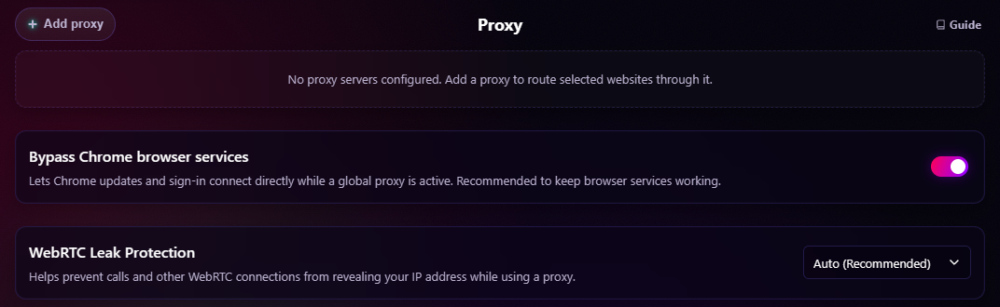

Protect & Customize
Media Proxy Router
Route selected media domains through a proxy without sending unrelated browser traffic through it.
Open media proxy settingsChroma includes a built-in split-tunnel proxy router that allows you to route traffic for specific media domains through a proxy server while keeping the rest of your browser traffic on your direct, local connection.
It is designed for media-site routing: sending supported services through proxy regions that reduce ad serving, or through country-specific routes for region-specific media delivery. This operates entirely within the browser via dynamic Proxy Auto-Configuration scripts, so it does not require a system-level VPN installation.

Add A Proxy
Have the protocol, host, port, and any supported credentials supplied by your proxy provider ready. A VPN subscription alone does not supply these connection details.
- Open Settings -> Proxy and click Add proxy.
- Select the proxy protocol and enter the host and port supplied by your provider. Enter the host without a protocol prefix.
- For an HTTP/HTTPS proxy, enter a username and password if required.
- Click Save proxy.
- Enter a domain under Routed domain and click Add Domain, or select Global fallback to route unmatched browser traffic through this proxy.
- Review the automatic connection check, or click Test to check again. Review Health if routing is unavailable.
Master protection and the proxy's own switch must be on for routing to take effect. Adding a supported service can also route its related media-delivery domains; see Smart-Link Auto-Expansion.
Supported Protocols
Chroma supports HTTP, HTTPS, SOCKS4, and SOCKS5 proxies. Choose the protocol from the proxy setup dropdown, then enter the proxy host without a protocol prefix.
SOCKS4/SOCKS5 proxies are supported only when they do not require username/password authentication. Chrome extensions can provide credentials for HTTP/HTTPS proxy authentication challenges, but Chrome does not expose SOCKS username/password authentication to extensions through the proxy/PAC flow.
For authenticated SOCKS providers, use provider-side IP allowlisting if available, or choose an HTTP/HTTPS proxy endpoint instead.
How This Differs From FoxyProxy
Chroma focuses on domain routes, fixed Smart-Link domain expansion, and an optional global fallback alongside its other protection layers. If you need a dedicated general-purpose proxy manager, consider a tool such as FoxyProxy; Chroma's controls are designed around routing selected media services.
Network filtering and routing have separate jobs. Chromium's Declarative Net Request (DNR) engine decides whether to block or allow a request. The Proxy Auto-Configuration (PAC) script chooses the direct or proxy transport for traffic that proceeds through the browser's network stack.
Security
Your proxy credentials, username and password, are stored locally in an obfuscated form using a bundled extension key. They are decoded in memory only for a genuine proxy-authentication challenge. Chroma requires the exact normalized host, port, and HTTP/HTTPS proxy type to match the route currently effective in Chrome. Disabled, deleted, stale, unrouted, master-paused, test-inactive, or externally controlled proxy records receive no credentials. Authentication attempts are bounded per request to prevent challenge loops.
This can reduce casual readability in extension storage, but it is not strong encryption and is not a substitute for operating-system or browser-profile security.
Connection Verification
Proxy cards automatically request a connection check when saved, enabled proxies are displayed in the popup or settings. You can also click Test. These are checks triggered by the UI, not continuous background monitoring.
For a fresh test, Chroma temporarily routes its IP-check service domains through the selected proxy and verifies that Chrome has accepted the matching PAC state. If another extension or browser policy owns proxy settings, the test fails rather than reporting a healthy connection. The temporary test route is removed afterward, restoring the saved routing configuration.
Chroma tries a public IP-check service selected from Cloudflare Trace, AWS CheckIP, ipify, and icanhazip, and may try one more if the first fails. Those services receive normal request metadata through the test route. See Data Sharing for the external-service boundary.
A successful test displays the detected IP address. Results may be reused for up to 60 seconds when the connection definition is unchanged and the proxy remains effectively routed by Chroma. A successful check confirms that test connection; it does not guarantee a streaming service will accept the proxy or use the same external IP for every request.
Global Proxy Fallback
In addition to domain-specific routing, Chroma supports a Global Fallback mode. Click Global fallback on a settings proxy card, or GLOBAL in the popup, to select that proxy for browser traffic that does not match a domain-specific rule.
This is browser-level proxy routing, not a system VPN, while still allowing you to send specific traffic, such as YouTube, to a different proxy server simultaneously.
The main switch on each proxy card is a per-proxy enabled/disabled control:
- Switch ON: The proxy can route its enabled domains and serve as the selected global fallback.
- Switch OFF: Routing pauses. Saved domains and the global fallback selection are preserved until the switch is turned back on.
- Global fallback: Selects or clears the global fallback independently from the switch. The selected button is highlighted, and the card's domain controls are hidden while it is the global fallback.
Route Order And Overlapping Domains
Domain routes match the listed hostname and its subdomains. Chroma evaluates routes in this order:
- The enabled Google/Chrome bypass list connects directly.
- A connection test temporarily routes its IP-check service domains through the proxy being tested.
- Enabled domain routes, including Smart-Link expansions, are checked in saved proxy order. The first matching proxy wins.
- Unmatched traffic uses the enabled global fallback, or connects directly if none is active.
The first matching domain route wins even if a later proxy has a narrower domain. For example, if the first saved proxy routes youtube.com, a later proxy's music.youtube.com route does not override it. Smart-Link can also create overlaps: routing youtube.com includes googlevideo.com, so a later separate route for googlevideo.com will not win.
To change the winning route, remove or disable the overlapping domain assignment on the earlier proxy, or disable that proxy. A global fallback is for unmatched traffic; it is not a backup server used when a matching domain proxy fails. Chroma's PAC returns one proxy for a matching route without appending a direct-connection fallback.
Master Protection Lifecycle
Master protection governs domain, global-fallback, and test routing. Its pause and restoration behavior is documented in Master Protection Lifecycle.
Chrome allows only one extension or policy controller to own proxy settings at a time. If another controller wins, Chroma separates requested from effective routing, withholds credentials, reports the conflict in Health, and removes dormant Chroma PAC state so an obsolete route cannot reactivate later. When Chrome reports that control is available again, Chroma automatically reconciles the latest stored intent.
Google And Chrome Domain Bypass
The setting labeled Bypass Chrome Browser Services inserts a fixed direct-connect list whenever Chroma installs a PAC route. It is enabled by default. Despite the label, it is not limited to internal browser requests or to Global Proxy Fallback: it also applies during domain-only routing, affects normal page navigations and resources on matching hosts, and is evaluated before connection-test, domain-specific, and global routes. An explicit route for a listed hostname therefore still resolves directly while the bypass is enabled.
The list covers each hostname below and its subdomains:
- AI, optimization, and account services:
optimizationguide-pa.googleapis.com,optimizationguide.googleapis.com,gemini.google.com,bard.google.com,generativelanguage.googleapis.com,accounts.google.com, andoauthaccountmanager.googleapis.com. - Update and client infrastructure:
update.googleapis.com,tools.google.com,clients1.google.comthroughclients6.google.com,dl.google.com,dl-ssl.google.com,edgedl.me.gvt1.com,redirector.gvt1.com,redirector.gvt2.com,gvt1.com,gvt2.com, andgvt3.com. - Other Google API and content hosts:
storage.googleapis.com,commondatastorage.googleapis.com,www.googleapis.com,aratea-pa.googleapis.com,scone-pa.clients6.google.com,gstatic.com, andgoogleusercontent.com.
This default can help browser-managed updates, sign-in, and optional Google/Chrome services continue working, but it also means visits and page resources on the broader listed domains can avoid the proxy. Turn the bypass off when every matching request should follow normal Chroma routing, while recognizing that some Chrome-owned features may then fail.
WebRTC Leak Protection
WebRTC Leak Protection helps prevent WebRTC/STUN traffic from bypassing proxy routing. WebRTC can discover network candidates through paths that are separate from normal browser page requests, so a page may be able to see a WebRTC public IP even while regular traffic is routed through Chroma's proxy fallback.
Chroma controls Chrome's native WebRTC IP handling policy to reduce that bypass risk.
Modes:
- Auto: Applies strict WebRTC protection when Global Proxy Fallback is enabled and configured, and releases the browser setting when it no longer applies.
- Balanced: Limits WebRTC to the default public interface only.
- Strict: Disables non-proxied UDP. This offers the strongest protection but may affect browser calls or video chat quality.
- Off: Releases Chroma's WebRTC routing control.
These modes follow the master protection lifecycle. If another extension or policy controls the setting, Health reports the request as degraded and Chroma retries automatically when control is released.
Dynamic Routing Status
Proxy cards summarize saved route intent and the latest connection-test result:
- GLOBAL PROXY ACTIVE: The server is selected for unmatched browser traffic. Direct-connect bypasses, browser-restricted traffic, and any more-specific route are exceptions.
- ROUTING [X] DOMAINS: The server is only handling the specific domains you have listed.
- CONNECTED: The server is ready but has no current routing assignments.
- DISABLED: The proxy is saved but paused. Its domain rows and global selection, if any, are preserved.
These card labels are not proof that Chrome accepted Chroma's PAC settings. The Health panel is authoritative for requested, master-paused, effective, externally controlled, and incomplete-release state. In particular, a saved GLOBAL selection is not effective while master protection is off or another controller owns Chrome's proxy setting.
Troubleshooting A Route
If streaming buffers through a proxy, test another route or temporarily disable the proxy to compare playback on your direct connection. If a domain uses an unexpected route, check route order, Smart-Link expansion, and the Google/Chrome bypass before changing credentials. If Test passes but a site refuses playback, the service may reject that proxy or region.
For browser-wide problems, check Health for another proxy controller, and use the layer-by-layer steps in Everyday Use & Troubleshooting.
Smart-Link Auto-Expansion
To reduce infinite spin and geo-blocking issues caused by route mismatches between a site's UI and its video delivery network, Chroma includes a Smart-Link system. When you add a supported streaming-service domain, Chroma expands it using the fixed known-domain map below. It does not discover new CDN relationships dynamically.
For example, adding youtube.com also routes googlevideo.com, ytimg.com, and youtube-nocookie.com through the same configured proxy. This improves route consistency but does not guarantee the same external IP for every request; the proxy provider controls egress assignment.
Supported services include:
- YouTube:
googlevideo.com,ytimg.com,ggpht.com,youtube-nocookie.com,youtu.be,youtubei.googleapis.com,youtube.googleapis.com - Netflix:
netflix.net,nflxvideo.net,nflxext.com,nflximg.com,nflximg.net,nflxso.net,nflxsearch.net - Amazon Prime Video:
amazonvideo.com,primevideo.com,aiv-cdn.net,pv-cdn.net,aiv-delivery.net,media-amazon.com, andssl-images-amazon.com. Regionalamazon.*domains such asamazon.deoramazon.co.jptrigger this same CDN expansion when the user adds them; Chroma does not automatically add every regional Amazon hostname. - Twitch:
ttvnw.net,jtvnw.net,twitchcdn.net - Disney+:
disney-plus.net,dssott.com,dssedge.com,bamgrid.com,disney-plus.com - Hulu:
hulumail.com,huluim.com,hulu.hbomax.com - Max (HBO):
hbomax.com,hbo.com,hbonow.com,hbogo.com - Spotify:
scdn.co,spotify.net,audio-ak-spotify-com.akamaized.net